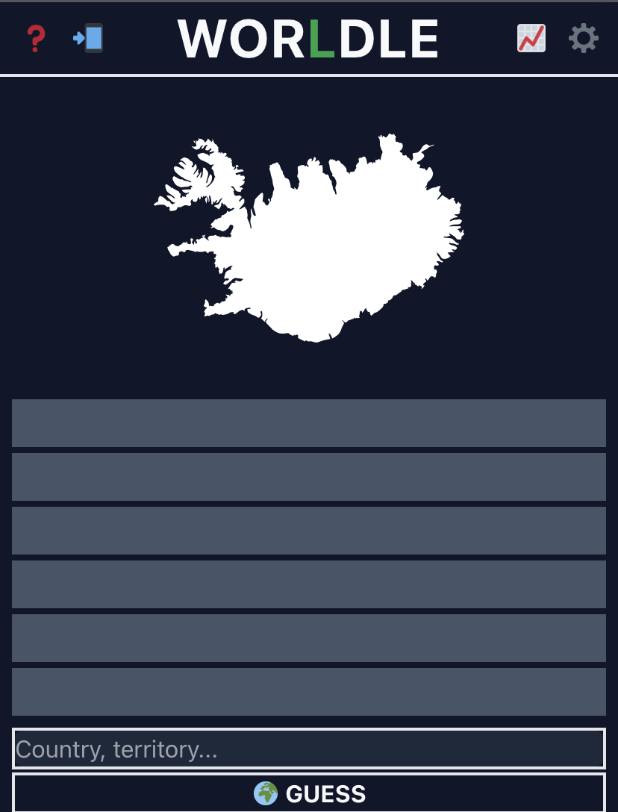

This website will link you to the most wonderful game, Worldle!
If you love memorizing the shapes of country borders, then this game is for you. Recent countries include:
But why should I play Worldle, you ask? By playing daily you'll:
| Country | Day | Guesses |
|---|---|---|
| United Kingdom | October 24 | 1 |
| Cambodia | October 23 | 2 |
| Singapore | October 22 | 5 |
Here's what Worldle looks like:
Want to watch someone solve a Worldle puzzle? No? Want to see a giraffe drink some water? Watch this!